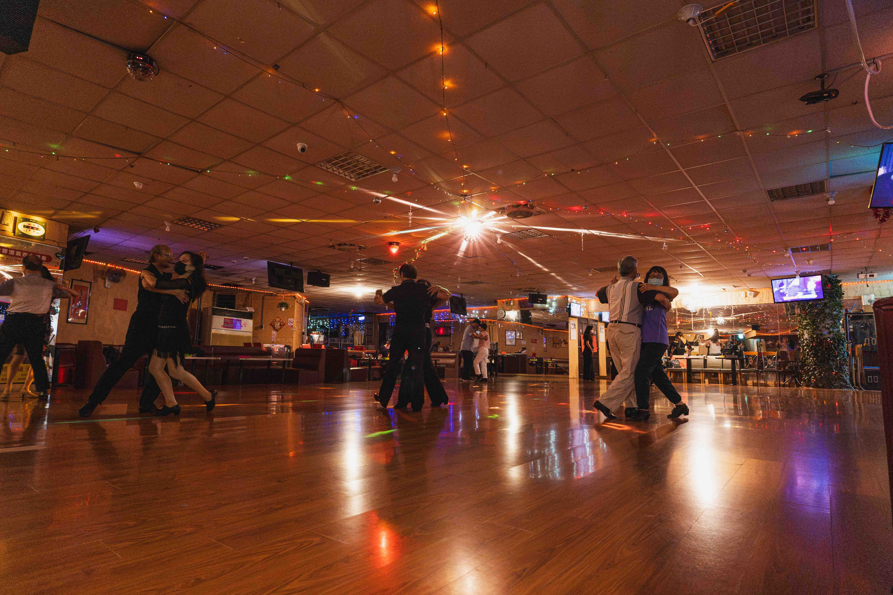
隱身在中山區陰暗地下的浪漫屋，是台北僅存無幾的舞廳。這裡的時空彷彿停留在過去，但叔叔阿姨跳舞的身手，還有唱歌的中氣卻絲毫沒有因為歲月而衰退。就連卡啦OK的點歌單，都不乏近年的流行歌曲。
這裡在年輕人的打卡下成了稀奇的懷舊聖地，更不乏有人包場拍婚紗。知道我們要拍照，老闆還特地為我們打開彩燈播放舞曲，大家就像受到號召一樣，紛紛往舞池聚集，隨著溫柔的舞曲翩翩起舞。
浪漫屋中午入場只要100元，冷氣涼爽，想待多久就待多久，茶水免費供應，中午和傍晚還有訂餐服務。「來這邊的人都把跳舞當運動交朋友啦，不然待在家久了很容易那個」老闆手握拳在腦袋邊轉了兩下。
老闆十分歡迎年輕人一起來感受不一樣的氛圍，下次不妨帶著朋友一起到浪漫屋，體驗舊時代的浪漫吧！
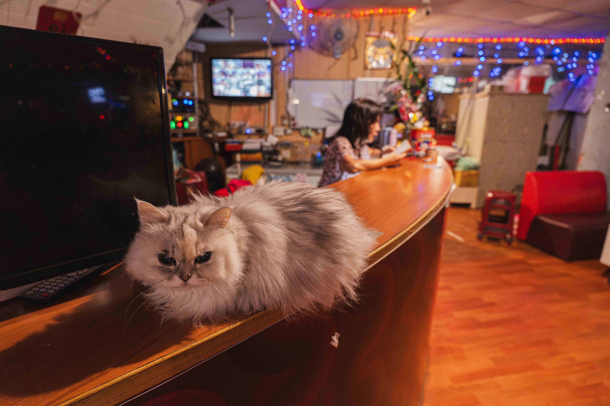
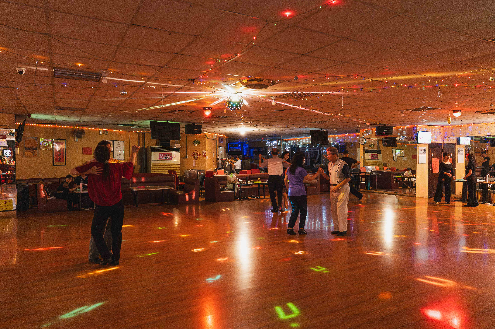
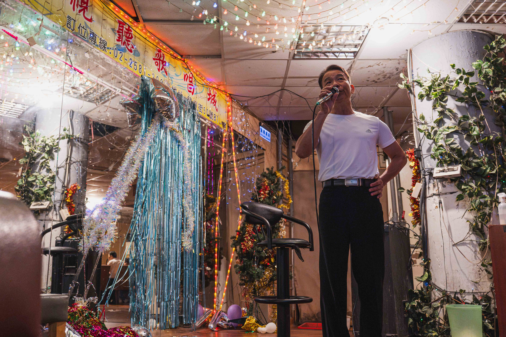
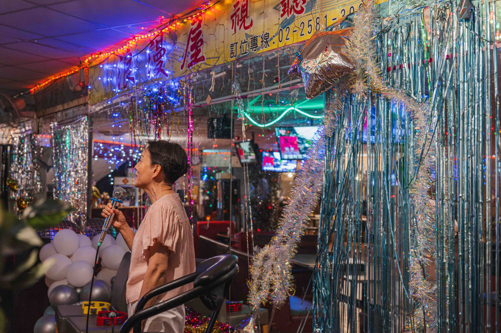
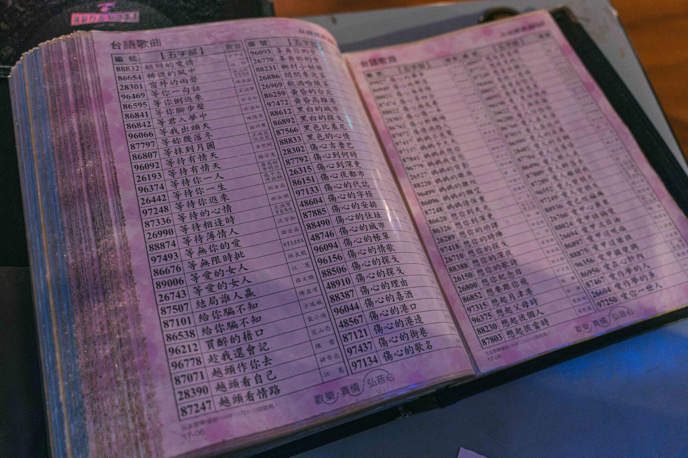
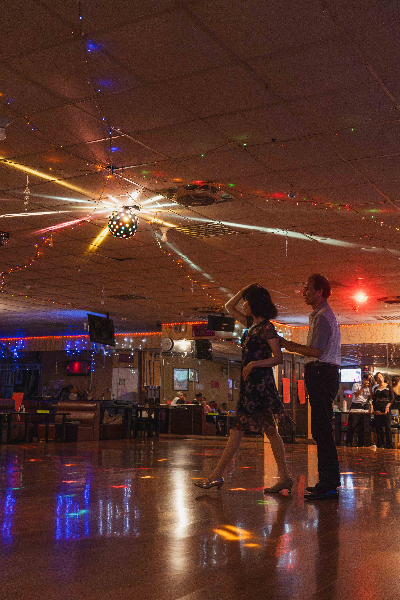
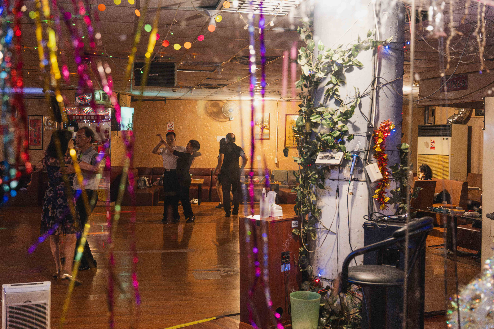
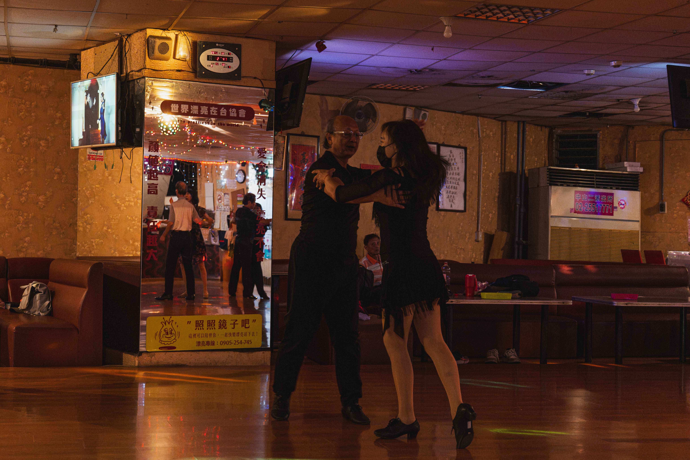
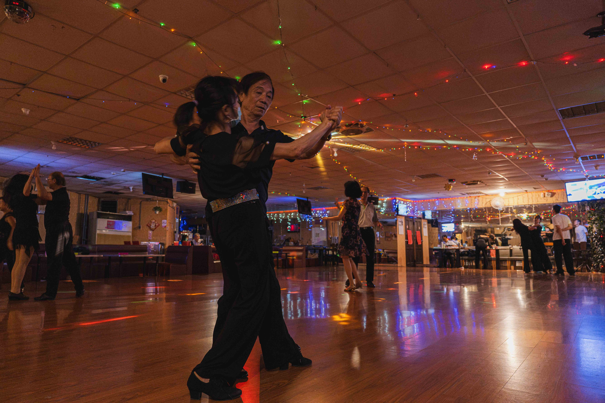
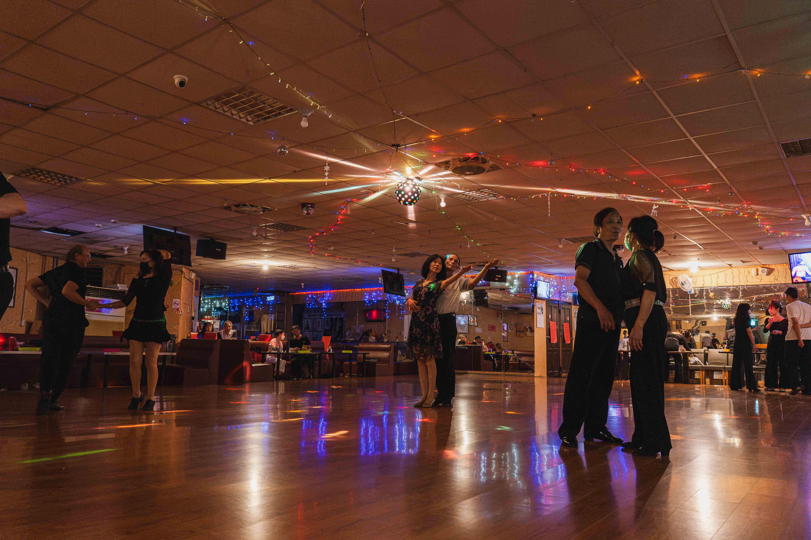
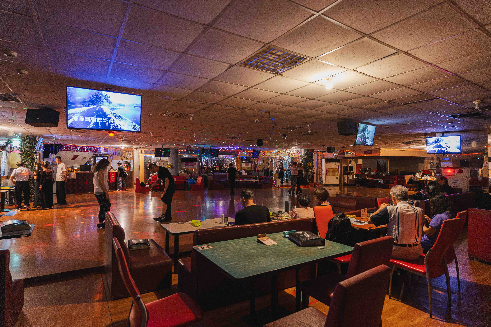
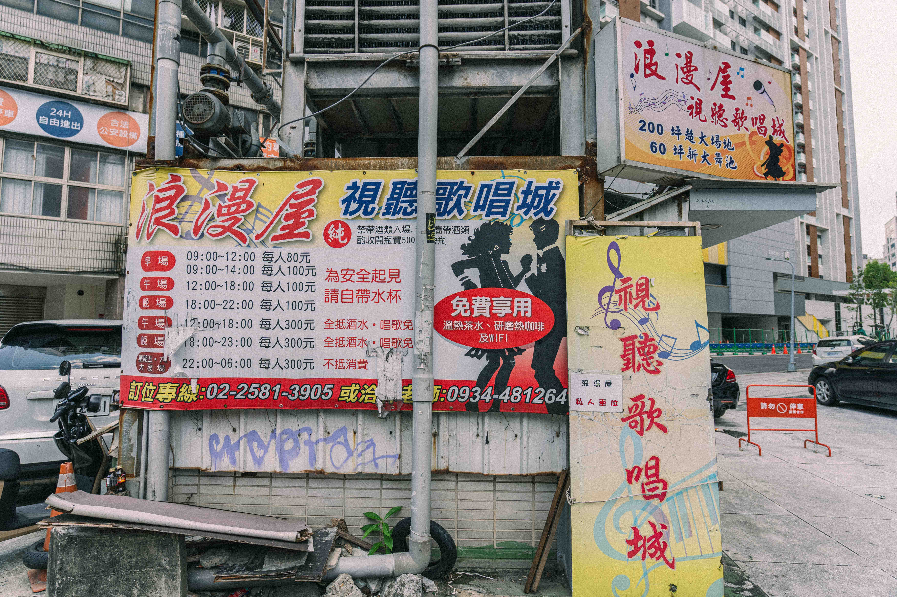